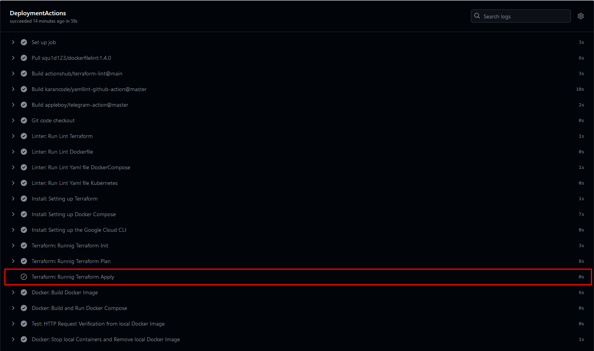
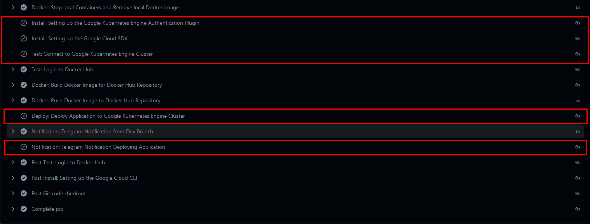

Выполнение проекта
Проект состоит из двух веток: main и dev.
Ветка dev предназначена исключительно для проверки внесенных изменений и не влияет на активный проект. Ветка main имеет непосредственное влияние на активный процесс развертывания инфраструктуры в облачном провайдере и конфигурацию, а также на публикацию приложения в облаке. Запуск GitHub Actions происходит при коммите в основную ветку (main) или при слиянии (merge) dev ветки с основной. Все операции выполняются при помощи CI GitHub Actions на основе файла Deployment_Actions.yaml.
Файл "Deployment_Actions.yaml" содержит описание действий для автоматического развертывания приложения. Ниже приведено общее описание кода:
- Настройка событий, на которые реагирует автоматизированный процесс развертывания. В данном случае процесс запускается при push в ветки "main" и "dev".
- Определение задачи "DeploymentActions", выполняющейся на операционной системе Ubuntu.
- Настройка параметров выполнения для задачи, включая использование оболочки bash.
- Определение последовательности шагов, которые нужно выполнить:
- Проверка кода из репозитория Git.
- Запуск проверки синтаксиса Terraform.
- Запуск проверки синтаксиса файла Dockerfile.
- Запуск проверки синтаксиса YAML-файлов Docker Compose.
- Запуск проверки синтаксиса YAML-файлов Kubernetes.
- Установка и настройка Terraform.
- Установка и настройка Docker Compose.
- Установка и настройка Google Cloud CLI.
- Выполнение инициализации Terraform.
- Выполнение планирования Terraform.
- Применение изменений, если ветка - "main". Сборка Docker-образа.
- Сборка и запуск Docker Compose.
- Проверка доступности различных URL-адресов на локальном Docker-образе.
- Остановка контейнеров и удаление Docker-образа.
- Настройка аутентификации для использования Google Kubernetes Engine.
- Установка Google Cloud SDK.
- Подключение к кластеру Google Kubernetes Engine.
- Аутентификация в Docker Hub.
- Сборка и маркировка Docker-образа для репозитория Docker Hub.
- Отправка Docker-образа в репозиторий Docker Hub.
- Развертывание приложения на кластере Google Kubernetes Engine.
- Уведомление в Telegram о развертывании приложения на ветке "main"
[Ветка dev]:
В процессе запуска ветки dev в рамках конвейера выполнены следующие этапы, специально предназначенные для данной ветки. Операции, связанные с изменением инфраструктуры, развертыванием кластера Kubernetes и публикацией приложения, не выполняются в данном контексте:

